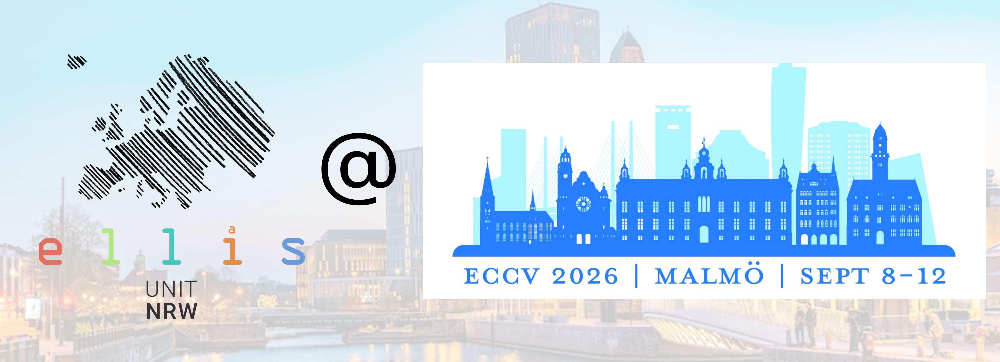

Published
ELLIS Unit NRW at ECCV 2026
Ten papers with contributions from ELLIS Unit NRW members will be presented at ECCV 2026 in Malmö. The work covers action understanding, 3D reconstruction, scene understanding, and trajectory forecasting.
Join us at the poster sessions to meet the researchers and learn more about their work.
Thursday, 10 September
16:30–18:30 · ExHall
Friday, 11 September
16:00–18:00 · ExHall
Saturday, 12 September · Morning
10:30–12:30 · ExHall
Saturday, 12 September · Afternoon
15:00–17:00 · ExHall
-
Register Any Point: Scaling 3D Point Cloud Registration by Flow Matching
Poster #8 -
Map-Det3D: Metric Feed-Forward 3D Reconstruction Prior for Multi-view 3D Object Detection from Streaming Inputs
Poster #18 -
TASE: Truncation-Aware Semantic Embeddings for 3D Scene Understanding and Editing
Poster #65 -
Volume Transformer: Revisiting Vanilla Transformers for 3D Scene Understanding
Poster #71 -
Towards Metric-Agnostic Trajectory Forecasting
Poster #457
We look forward to seeing you in Malmö!